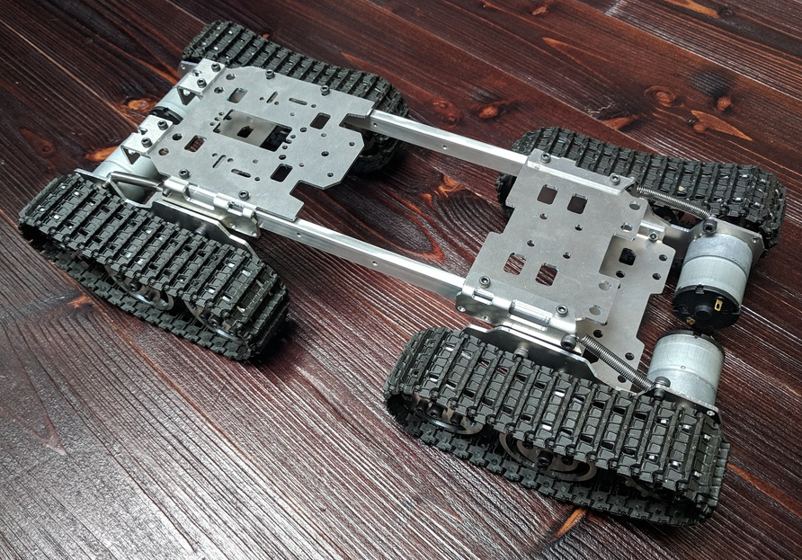

Robot’s Hardware¶
There is an Arduino Uno Rev3 onboard micro-controller which is connected to all sensors, motor drivers and other electronics. The Arduino communicates with an onboard Raspberry Pi 3 Model B+ (RPI) computer over a USB serial port (see Serial Protocol for details).
The RPI is connected to a Pi NoIR Camera V2 providing both day and night vision (accompanied with NIR LEDs).
The robot is actuated with four continuous tracks (two on each side) each powered by a 12V brushed DC motor.
The robot is powered by six, serially connected, 18650 li-on battery cells with capacity of 3.3Ah. The batteries provide voltage between 25.2V (fully charged, no current draw) and 15V (BMS cut-off voltage) with maximum continuous current draw of 8A. The batteries are connected to a BMS on a separate PCB.
Two buck converters, connected to the batteries, provide power for all electronics on the robot. One 5V buck powers the RPI (the Arduino is powered over the USB from the RPI). The other 12V buck powers the motors and other demanding electronics.
The motors are controlled from Arduino via two MOSFET based H-bridges (for motor direction control) and MOSFET transistors connected to Arduino PWM output controlling power input. Left and right sides are controlled independently. Front and rear tracks are connected (id est not independently controlled).
The Arduino is also connected to a current current sensor placed between BMS and remaining electronics. One of its analog input is also directly connected between two resistors on the battery to read its current voltage. This data will be used for battery power consumption and capacity estimation.
LEDs¶
LED 0 – Arduino onboard LED.